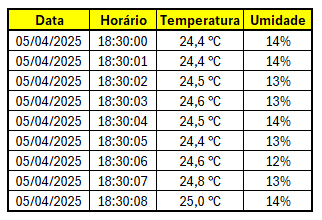

Monitoramento em tempo real
⚠️ Quantidade de alertas: 0
Histórico dos dados

⚠️ Quantidade de alertas: 0


Giovanna Tracinkas
Guilherme Aoki
Guilherme Barros
João Oliveira
Pedro Tomaszewski
Kauã Medeiros